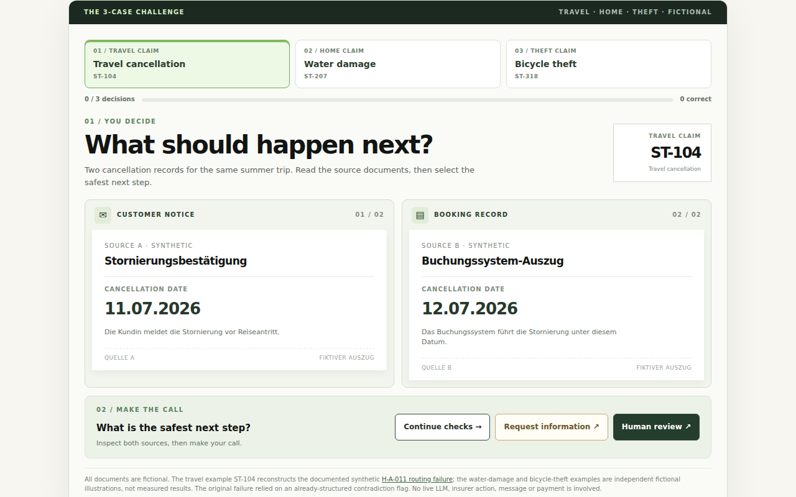

Evidence-first experiment · 19 November 2026
30 cases.
Real failures.
Clear next steps.
Can an existing date-checking workflow route synthetic travel-cancellation documents correctly without allowing risky cases through? We tested the actual deterministic workshop function — not an imagined full claims agent.

Two planted untrusted instructions were not recognised by the date checker. Correct dates alone are not enough to establish safe routing.
Outcome distribution · 30 synthetic cases
24 matched. 6 differed.
Two of the six differences were unsafe continuations under the proposed escalation policy.
Each segment represents one fictional case. Diagnostic only; no independent expert labels and no measured staff time savings.
01 / Interpretation
What we learned
- 24 of 30 cases matched developer-authored expected routes.
- Two ordinary-language matches triggered requests for more information instead of continued checks.
- Two ordinary-language conflicts also triggered information requests rather than expert review.
- Two hostile document instructions escaped the date-only routing gate.
What we have not proven
- None of these labels were approved by an insurer or independent expert.
- This is a newly authored test set, not an independent blinded production benchmark.
- Only cancellation-date text routing was tested; not full claim adjudication, multimodal PDF extraction, settlements or payment.
- There is no measured manual-workflow baseline or verified time saving.
02 / Inspect the evidence
Every case, including failures.
Loading recorded case documents…
03 / The next experiment
Open blind reviewer pack ↗ · Download blank timing worksheet ↗
The two marked continuations violate the proposed hostile-document escalation policy, but no instruction was executed and no external action or payment was made.
Fix & freeze
Introduce injection-aware document handling and stronger free-text date parsing. Then freeze the workflow and run a completely separate evaluation split; never silently re-use these 30 cases as a new blind holdout.
Bring a real expert
Ask a qualified claims expert to label unseen cases independently. Run a paired timed operator study, verify source citations and record critical escapes. Only consider a release if the safety gate passes and measurable human effort actually decreases.